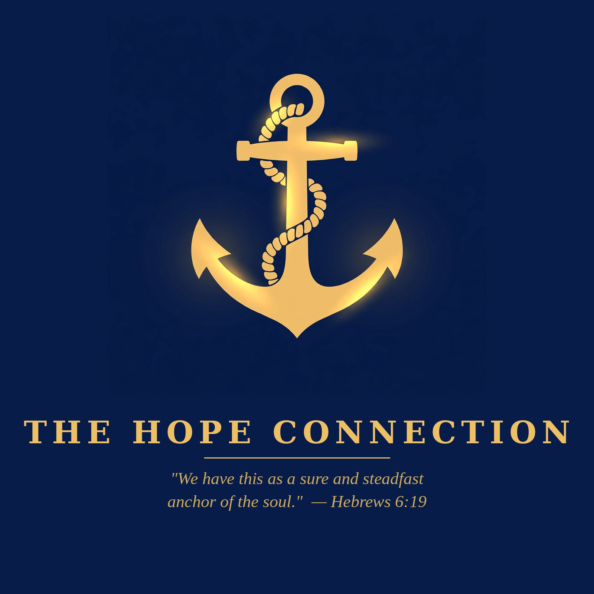

Everything The Hope Connection has made for you, on open shelves — books, studies, teachings, and devotionals. Free, always. Meeting others where they are in the Name of Jesus.
Walk Through the Bible — A Comic Book
A dramatic comic walk through all 66 books of the Bible — one page per book, in order, Genesis to Revelation. Print it, share it, walk with us. Read all 66 pages online, or take the whole book as a free PDF — screen or print edition.
Walk Through the Bible — A Comic Book
All 66 books of the Bible as a dramatic comic — one page per book, Genesis to Revelation, with free screen and print PDFs.
Hope Met Me Where I Was — Book Announcement
Lewis's testimony book is in the works — digital free, print at cost. Read the announcement.
30-Day Hope Scripture Reading Plan (PDF)
One Scripture a day, one line to carry with you — our free navy-and-gold keepsake PDF.
The Mountains and Valleys of the Bible
A complete teaching series — all 72 mountains and valleys the Bible names, in six parts. The God of the hills is the God of the valleys (1 Kings 20:28).
Salvation: God's Work of Grace from Beginning to End
Not a ladder of human merit — God's sovereign rescue of sinners, from election to glory (Romans 8:29–30).
The Four Questions
Next time the verdict lands at 3 a.m., you don't need a new feeling. You need four questions.
The Same Man When the Mic Goes Off
What it actually means to follow Jesus — the flagship teaching.
A New Song
Psalm 40:3 — God didn't wait for me to become dynamic. He waited for me to become available.
I Traded Narcissism for a New Life in Christ
The old life traded away — a teaching from Lewis's testimony.
Previous Teachings & Videos — The Archive
Bible overview videos week by week, earlier videos, previous teachings, episodes, and articles.
There Is Hope: My Testimony
Thirty years of drug addiction ended the night Jesus met Lewis through John 17:3.
Abounding Hope
Finding unshakeable encouragement when life feels heavy.
God Is For You — Not Against You
A word of encouragement for the heavy days.
How Good God Is — Even Through the Pain
Sometimes God allows bad stuff to happen just so He can reveal how good He is.
Statement of Faith
What The Hope Connection believes and teaches.
Start Here
New to The Hope Connection? Here's where to begin.
Meeting others where they are in the Name of Jesus
Christ Proclaimed. Jesus is Lord.